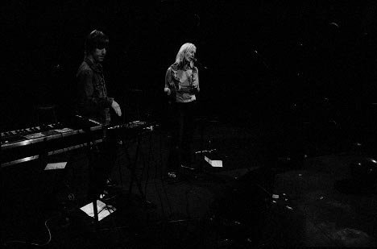
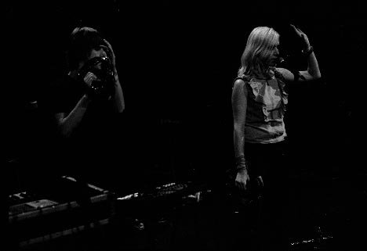
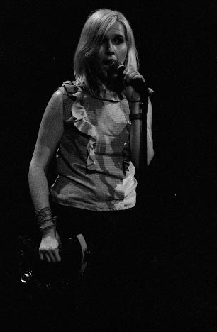
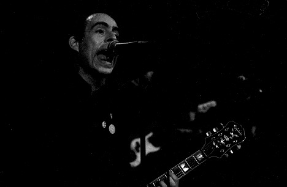
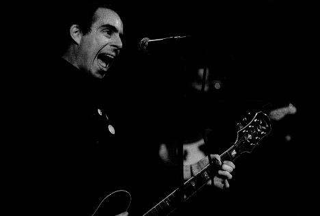
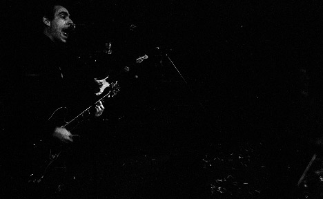

Big Orange Crayonmusical thingsTed Leo/Pharmacists and I Am the World Trade Center Bennington College, Bennington, VT May 18th, 2002 As far as my presence there, this show was a disaster. I thought that Ted and IATWTC and so on were playing during the day, so I got there a little before noon... then I found out that IATWTC was on at seven and Ted was on at eight. Now, for this to be a disaster, you have to understand that I can't stand being in Vermont for more than a few minutes at a time, and I couldn't really even wander around outside since it was rainy and cold. It was snowing at my house when I left in the morning... Les Savy Fav and the Anti-Pop Consortium were playing after Ted, but my get-the-hell-out-of-Vermont instinct was kicking hard. Then the worst part was when I got back and went to develop the film, I broke my camera trying to get it out. I rescued the film and developed it immediately at the wrong temperature so everything was underdeveloped. Although, I did eventually fix my camera and some of the pictures came out, so I guess it could have been worse. Pictures: I Am The World Trade Center    Ted Leo/Pharmacists The Pharmacists should have showed up in the pictures as well as Ted, but since the negatives are so thin, this is the best I can do...   I actually kind of like this one. I would have liked it better if it turned out how I planned and the shadows weren't so stark, but whatever. Here's a bigger version  Camera stuff: Body: Nikon F3HP Lenses: 50mm f/1.4 and 24mm f/2.8 Nikkors Film: Fuji Neopan 1600 exposed at ISO 3200, but developed closer to ISO 800 (Rodinal 1+100 for 21 minutes at what I thought was 18 degrees but was probably a lot colder) A possible explanation was that the heat in the building, included the water heating, was broken when I did it, and the next time I went in the dark room the hot water still wasn't working and I couldn't get anything out of the tap above 16 degrees... Please don't use these elsewhere unless you are in one of the bands or are a nice person. |
{kind=link}